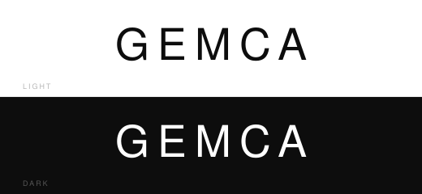

01 Primary Logo — Icon + Wordmark
02 Wordmark — Typographic Variations
03 Monogram — G Symbol for App / Favicon Use
Icon geometry: The G mark is constructed exclusively from rectangular bars (rx=1 for a precision-machined finish). Left vertical · Top horizontal · Bottom horizontal · Upper-right vertical · Inner horizontal shelf (accent blue). The "opening" at lower-right is the G's defining negative space. Scales cleanly to 16 × 16 px favicon at 2× density.
04 Minimal — Silicon Valley / Product Style

05 Institutional — Finance / Government / Legal
Use case: Letterhead, official correspondence, immigration documents, legal engagements, and any government-adjacent materials. The framed emblem conveys a stamp-like authority. Font weight Medium (500) vs. Light (300) for the primary wordmark asserts institutional confidence.
06 Colour System
Deep Navy
#0B1E3E · Primary
Steel Blue
#2E6FD8 · Accent
Sky Blue
#5B9EF0 · Inverse Accent
Graphite
#0D0D0D · Minimal / Print
Pure White
#FFFFFF · Inverse
07 Usage Guidelines
Typography: 'Helvetica Neue' (Light 300 for primary wordmark, Medium 500 for institutional). Tracking 12–14px on the 50px wordmark. For digital, Inter (Google Fonts) is an approved substitute.
Clear space: Maintain minimum clearance of 1× the cap-height of GEMCA on all four sides of any logo variant.
Minimum size: Primary logo — 160px wide. Wordmark alone — 120px wide. Monogram — 24px (retina) / 48px (standard).
Forbidden: Do not rotate, recolour outside the approved palette, apply drop shadows, stretch, or place on low-contrast backgrounds. The accent blue inner bar is the only approved two-colour element — do not add further colours.
Figma: All elements are pure SVG paths/rects — import and detach to edit. Convert text to outlines before final export. Grid spacing: 8pt base grid.
Clear space: Maintain minimum clearance of 1× the cap-height of GEMCA on all four sides of any logo variant.
Minimum size: Primary logo — 160px wide. Wordmark alone — 120px wide. Monogram — 24px (retina) / 48px (standard).
Forbidden: Do not rotate, recolour outside the approved palette, apply drop shadows, stretch, or place on low-contrast backgrounds. The accent blue inner bar is the only approved two-colour element — do not add further colours.
Figma: All elements are pure SVG paths/rects — import and detach to edit. Convert text to outlines before final export. Grid spacing: 8pt base grid.